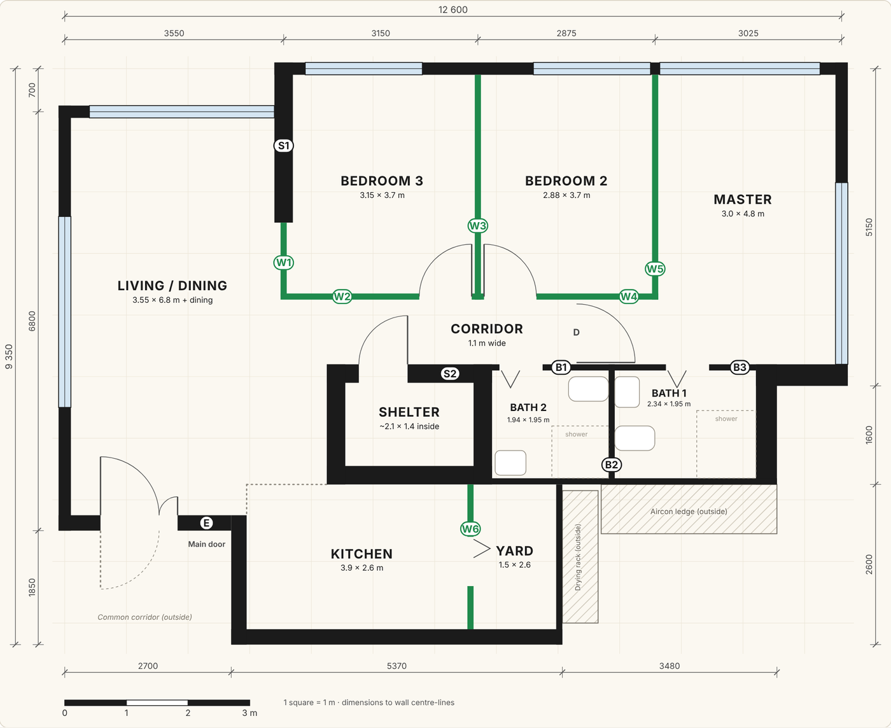
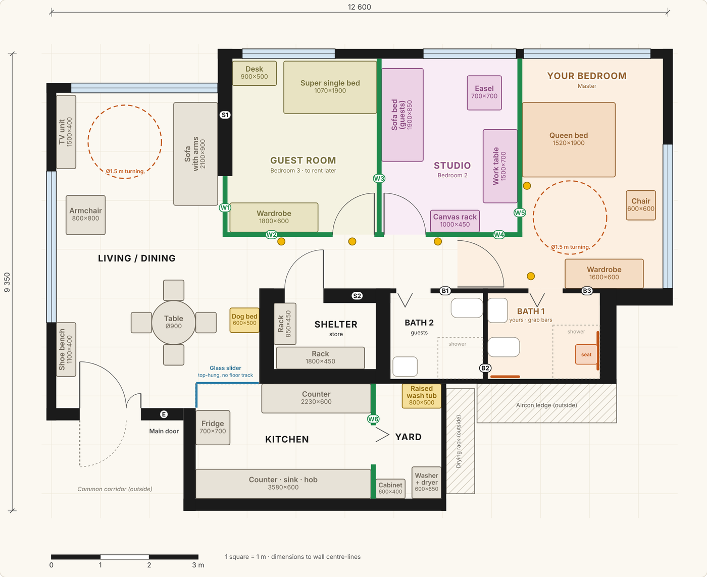
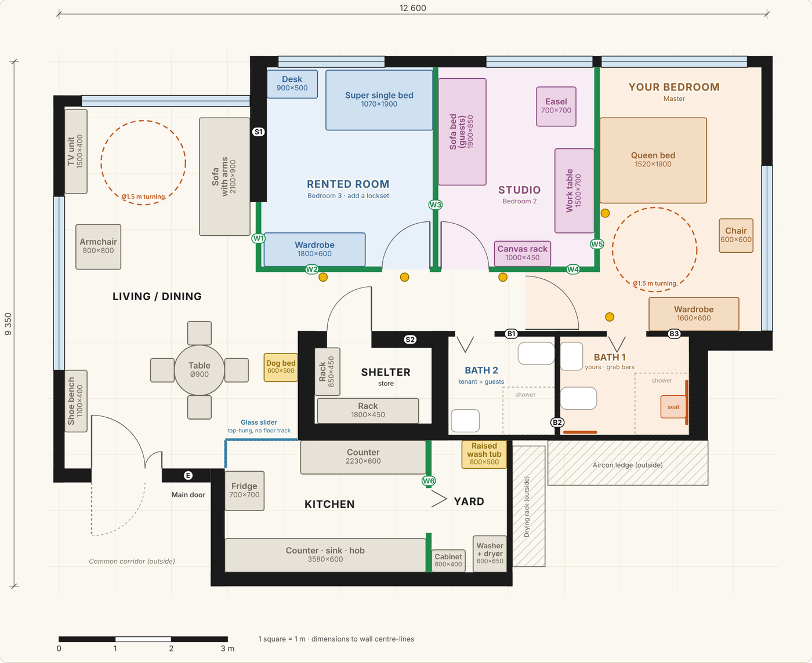
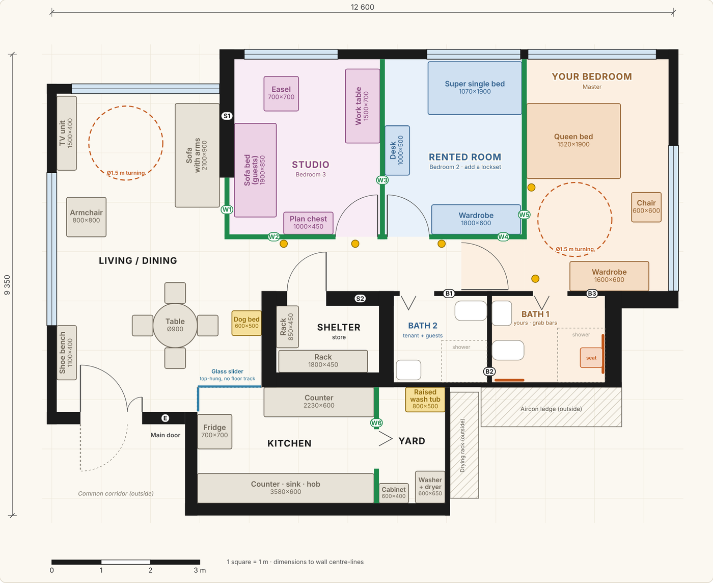
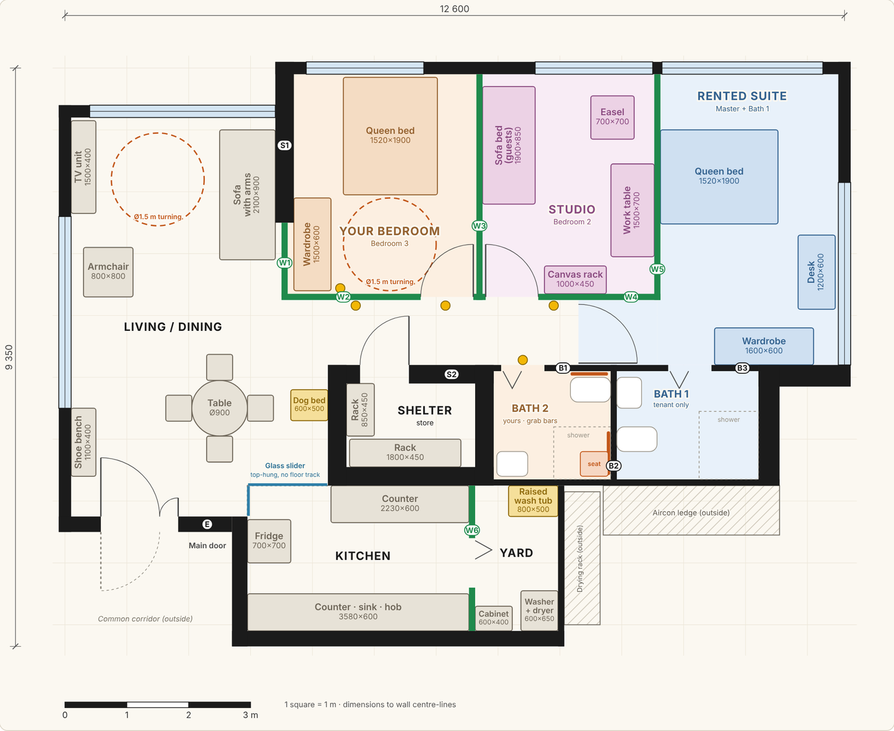
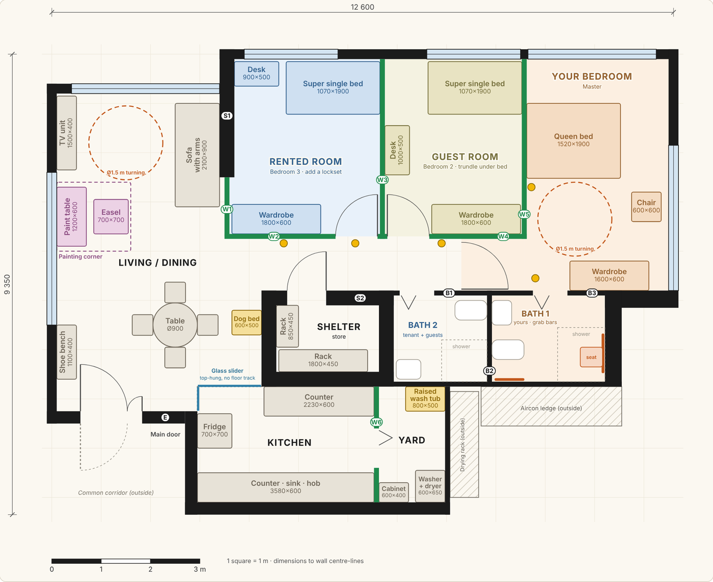
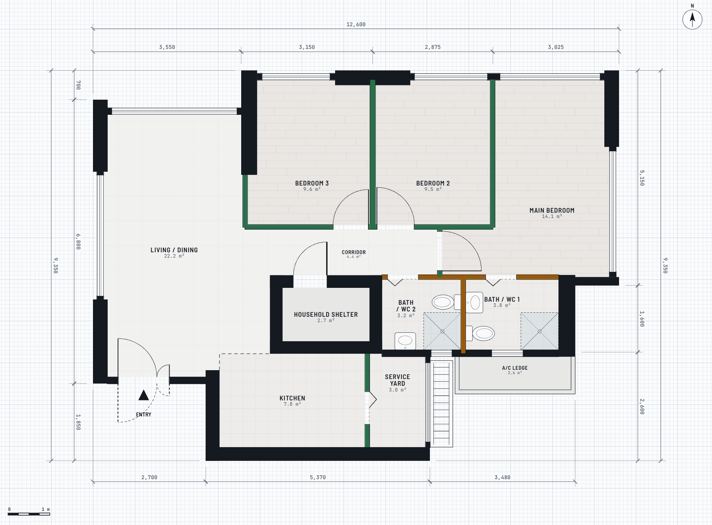
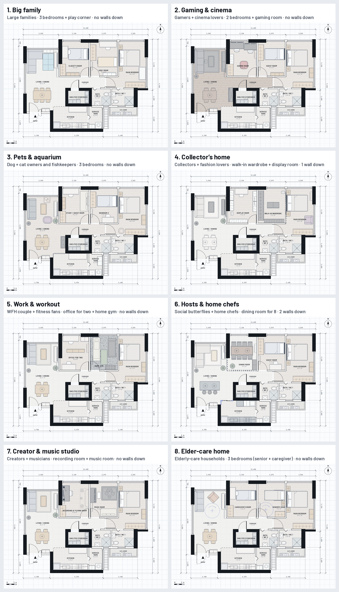

One BTO flat, planned for different households
Real answers from Claude, all from the same 4-Room Type 3 floor plan. Open any one in the CAD app to step through its layouts in 2D, 3D or walking.
Couple with a Shih Tzu, no kids
- We are
- couple, no kids, 1 Shih Tzu
- Coming up
- more work from home
- Must-haves
- a dog wash spot, easy-to-clean floors
Best fit: Layout A, two separate offices with nothing hacked. Bedroom 3 becomes the study now. When you're both working from home more, Bedroom 2 becomes the second office, with a sofa bed for guests, so you can each close a door for calls. The yard gets a raised dog wash tub, and one waterproof, scratch-resistant floor runs through the flat.


Hardcore collectors
- We are
- couple, hardcore collectors (LEGO, Bearbrick, sneakers)
- Coming up
- the collection keeps growing
- Must-haves
- a display room and a walk-in wardrobe
Best fit: Layout 1, Gallery + walk-in suite. Bedroom 3 becomes the display room, with a see-through glass cabinet facing the sofa. Bedroom 2 becomes a walk-in wardrobe with a sneaker wall, opening off the main bedroom's entrance. Only two short partitions come down, and space for the collection to grow is planned in from day one.
Couple who both work from home
- We are
- couple, both work from home full-time
- Coming up
- lots of video calls
- Must-haves
- two separate offices, a gaming corner
Best fit: Layout 1, "Bedroom in the middle". Office A goes in Bedroom 3, Office B and the gaming corner go in the main bedroom, and you sleep in Bedroom 2. With both of you on calls all day, a bedroom between the offices is the cheapest soundproofing there is, and no wall comes down.
Two streamers, two cats, baby on the way
- We are
- couple, 2 cats, we both game and stream
- Coming up
- a baby in about 2 years
- Must-haves
- a gaming room for two, cat-safe windows
Best fit: Layout 1, "Studio in Bedroom 3", and no walls come down. Bedroom 3 becomes your gaming room for two now, and it never has to move. Bedroom 2 is a guest and cat room until the baby comes, then it becomes the nursery next to your room. With the baby, you'll need all three bedrooms, so knocking down walls doesn't gain you much.


Family of five with a live-in helper
- We are
- couple with 3 kids (ages 2, 6 and 9) and a live-in helper
- Coming up
- the older two will need proper study space
- Must-haves
- the helper gets her own room
Best fit: Layout A now, then Layout B once your youngest is ready to share a room (around 3–4). No walls come down in either. You need all three bedrooms: one for you, one for your helper and one for the kids. In B the three kids get the biggest room, with a desk for two and their own bathroom.


Retired couple renting out a room
- We are
- retired couple in our 60s with a small dog
- Coming up
- we want to rent out one room for extra income
- Must-haves
- a hobby room for painting, and a flat that’s easy to get around as we age
Best fit: Layout A. Rent out Bedroom 3, make Bedroom 2 your studio, and keep the master for the two of you. No walls come down. The tenant gets the room nearest the front door and the common bathroom. The studio sits between their room and yours, and your own bathroom is a few steps from your bed.






From the 3D planner: one flat, eight households

